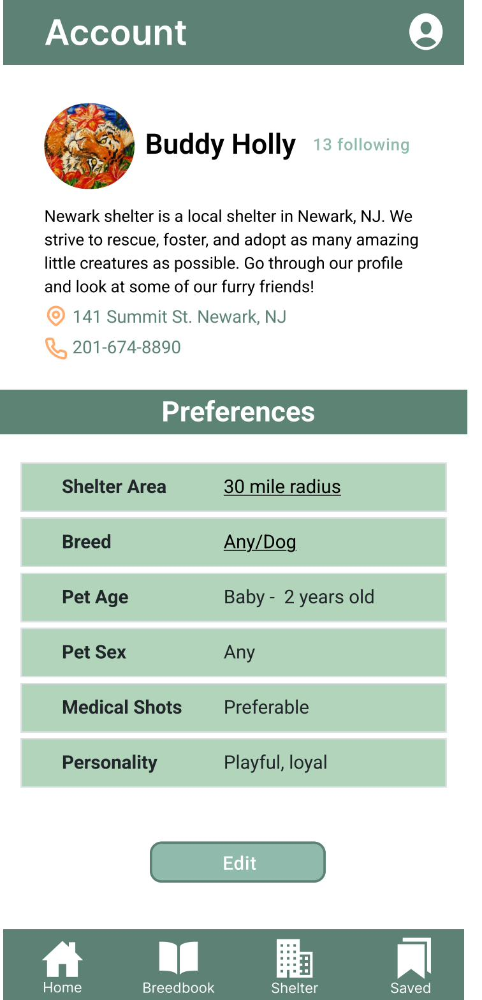
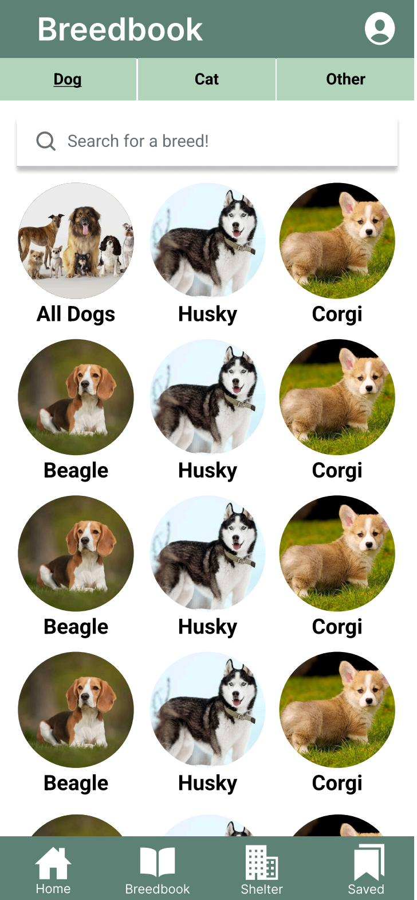
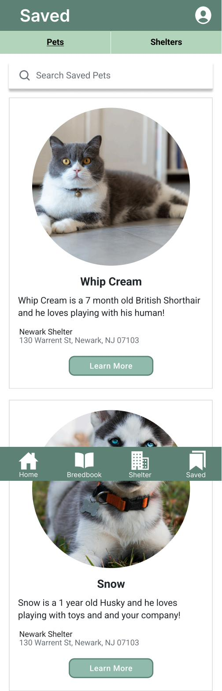
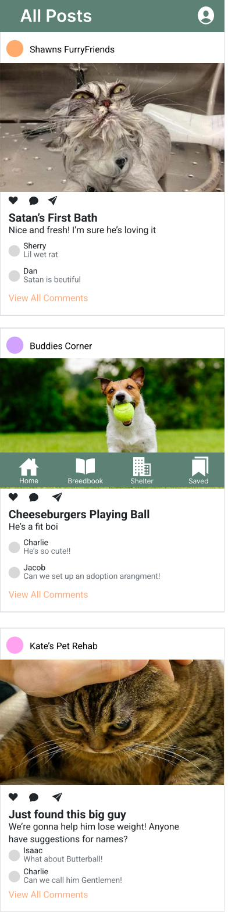
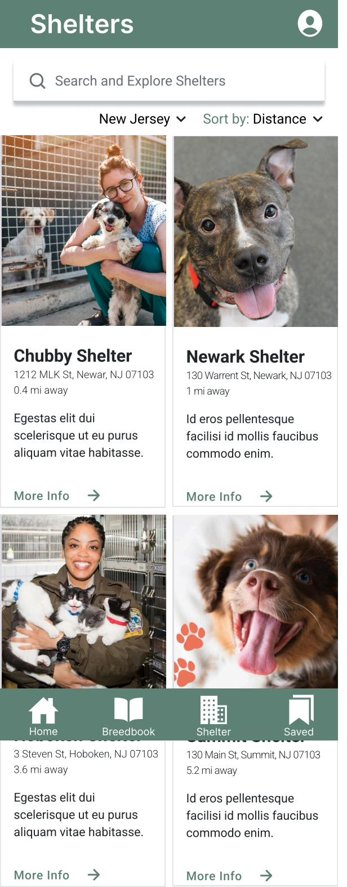
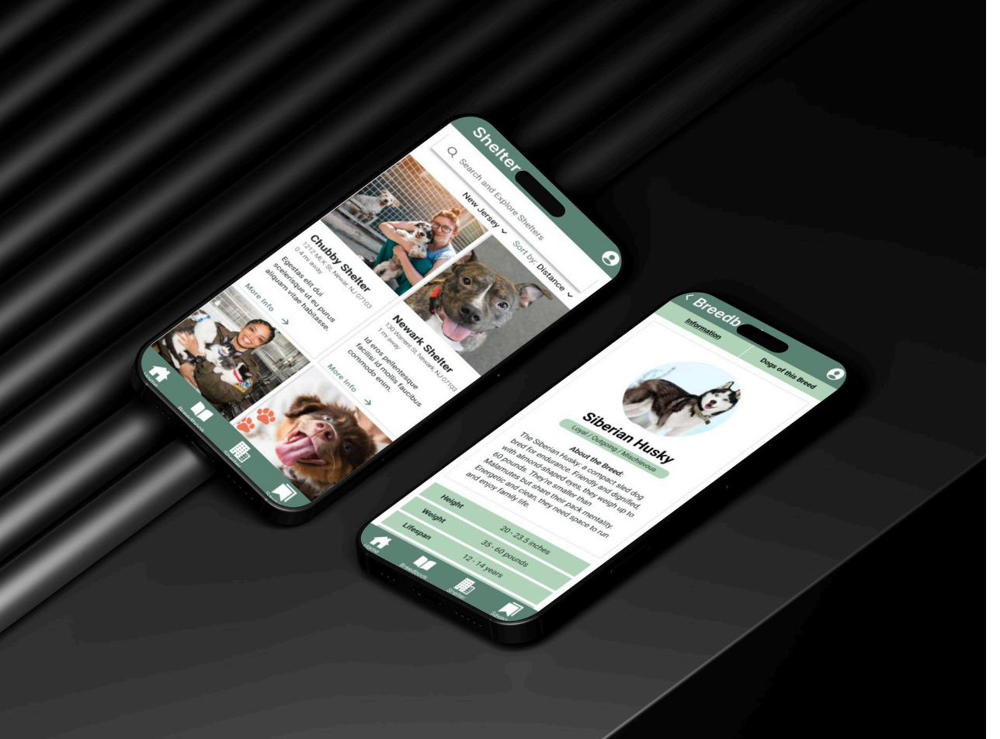

The Problem
Pet Adoption Is Broken
The existing pet adoption experience is fragmented. Petfinder feels like a product catalog. Shelter websites are outdated. The emotional journey of finding a pet — the excitement, the "is this the one?" moment — is nowhere in the digital experience.
Meanwhile, adoption rates remain low. Animals sit in shelters for months. The mismatch isn't about supply and demand — it's about connection. People don't adopt from catalogs; they adopt from stories.
Our Approach
Social Discovery Meets Purposeful Search
Jonessa and I designed Pawfect Pets around two complementary modes: passive discovery (a social feed that surfaces animals and stories without requiring intent) and active search (a breed browser and shelter finder for people who know what they're looking for).
The palette — warm greens and earthen tones — was chosen to feel calm and trustworthy, not clinical. Adoption is an emotional decision. The UI should feel like a warm home, not an e-commerce checkout.
Core Screens
4 Key Views

Home Feed

Breedbook

Shelters

Saved
Feature: Home Feed
Adoption as Social Discovery
The Home screen is a social feed — shelters post photos, updates, and animal stories. Users can comment, like, and share. It's TikTok for adoption: passive, emotional, and surprisingly effective at building the connection that leads to action.
Shelters become characters in the story, not just inventory sources. Following a shelter means you see their animals' journeys — from intake to adoption — which builds trust and investment over time.
Feature: Breedbook
Browse Breeds, Find Local Matches

Breedbook solves a specific problem: "I know I want a golden retriever — where can I find one near me?" Users browse by species, then drill into breed profiles with temperament info, care guides, and — crucially — a map of nearby pets of that exact breed currently available for adoption.
It turns information browsing into an immediate action path. You learn about a breed, fall in love, and see exactly which shelter has one waiting.
Feature: User Profiles
Preferences That Actually Help
User profiles include adoption preferences — not just demographic info. Area radius, preferred breeds, age range, sex, medical comfort, personality traits. This lets the app surface relevant animals proactively in the feed, rather than making users search every time.


User profile with adoption preferences (left) and saved pets/shelters view (right).
Results
1st Place
Judges praised the social feed concept as a genuine innovation on existing adoption platforms, and highlighted the cohesion between the warm visual design and the emotional intent of the product.
Reflection
What I Learned
Co-designing with Jonessa taught me how to divide responsibilities without fragmenting the vision. We split screens, but every design decision went through both of us before it was final. The best outcomes came from those debates — moments where one of us had a reason that the other hadn't considered.
Pawfect Pets also reinforced something about emotional UX: the most important job of the interface isn't efficiency — it's making the user feel safe enough to take an emotional leap. Adopting a pet is a commitment. The design has to earn that trust.